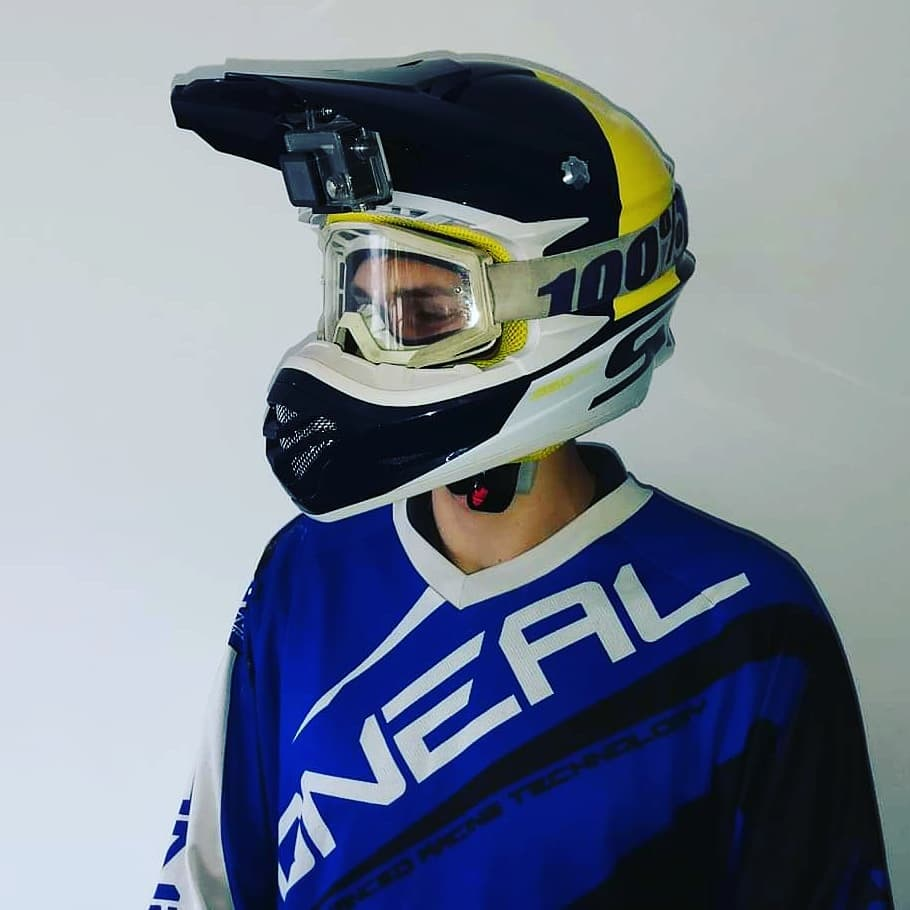

Rólam
Tiszaváry Máté vagyok. A neptun kódom: GZMNWJ. Jelenleg a Budapesti Műszaki Egyetem gépészmérnöki karára járok, mint első éves hallgató. Ezt megelőzően Szegeden tanultam a Szegedi Radnóti Miklós Kísérleti Gimnázium 6 osztáyos matematika szakán. Általános iskolába pedig ugyancsak Szegeden, az SZTE Juhász Gyula Gyakorló Általános és Alapfokú Művészeti Iskolája,
Napközi Otthonos Óvodájába jártam.
8 évig néptáncoltam, 10 évig fociztam, továbbá számos egyébb hobbit is kipróbáltam, például az úszást, rajzolást vagy a görkorcsolyázást is, de a fő hobbim a motorozás, melyet lassan 7 éve űzök. Ez utóbbi ihlette meg ezt a beadandómat is. Úgy érzem, hogy a motort tekinthetem saját munkámnak, mivel én magam, iskola mellett gyűjtögettem rá, vettem meg és én magam tartom karban mind motorikusan, mind esztétikailag is. Például a matricaszettet is én terveztem rá. A következő oldalon képek is vannak róla.